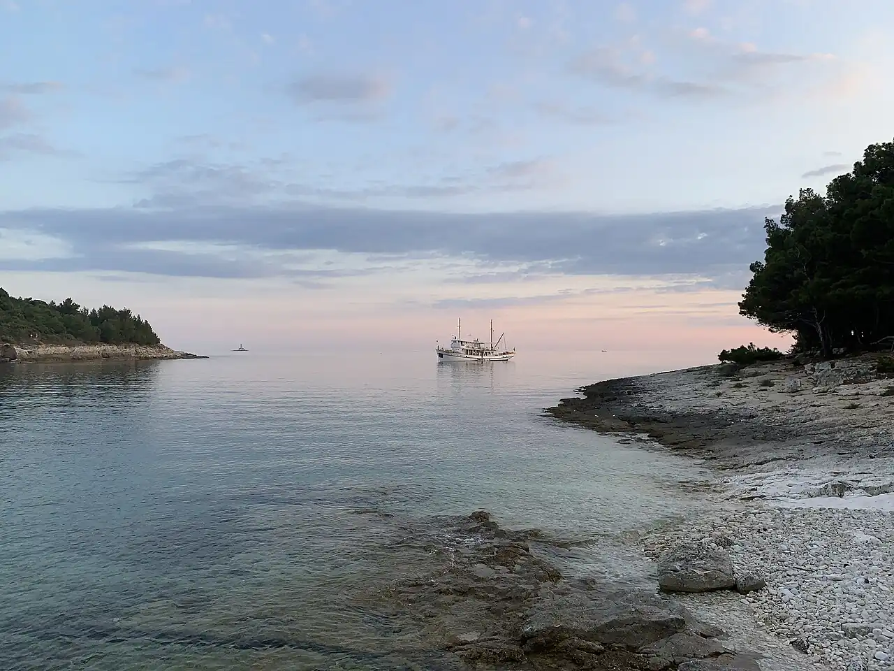

Cap Kamenjak
Istrie, Croatie · snorkeling, baignade

Pointe sauvage et protégée du sud de l’Istrie, découpée en criques rocheuses à l’eau très claire. Chemins de terre, falaises basses et fonds rocheux invitent au snorkeling.
- Lieu
- Istrie, Croatie
- Niveau
- Débutant
- Activités
- snorkeling, baignade
- Type d'eau
- Mer / océan
- Coordonnées
- 44.77, 13.92 (position approximative du secteur)
Dangers à connaître
- Rochers et oursins partout : chaussons indispensables.
- Sauts depuis les falaises : vérifie toujours la profondeur.
- Bora et vent de sud peuvent lever la mer.
Le conseil d'Ocean Buddy
L’entrée en voiture est payante en saison : prends des chaussons et de l’eau, il y a peu de services.
Ouvrir dans Ocean Buddy Télécharger sur l'App Store
Source : Fiche Ocean Buddy · septembre 2026 · à vérifier localement.